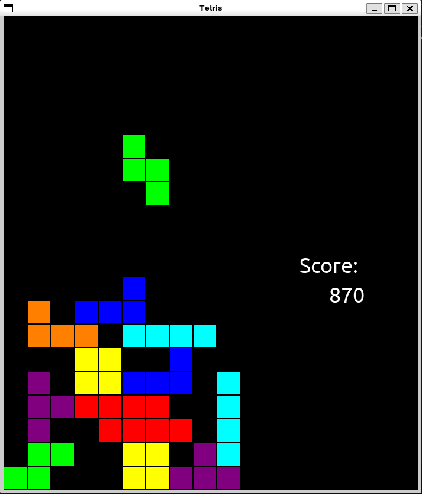
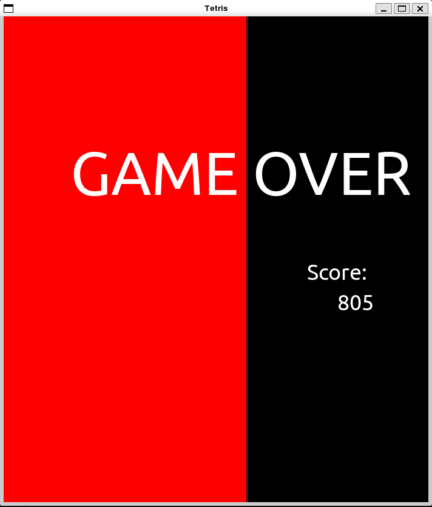

The purpose of this project was to use Python object-oriented programming to
create a classic game of Tetris.


Instructions
Tetris is played by arranging a sequence of shapes into complete rows. As each
row is completed, it will disappear from the screen. The pieces fall from the top
of the screen to the bottom. Each piece is made up of four blocks, arranged into
seven different patterns. You can rotate, move and drop the pieces as they fall to create rows.
But watch out! The pieces begin to fall faster every time you clear ten rows.
And if the blocks stack up and rise to the top of the screen, it's game over.
Game Controls
Left Arrow: Move piece to the left.
Right Arrow: Move piece to the right.
Up Arrow: Rotate piece clockwise.
Down Arrow: Rotate piece counter-clockwise.
Z Key: Drop the piece more quickly.
Space Key: Drop the piece immediately.
Scoring
Clearing one row: 100 points + 10 points per level
Clearing four rows at once: 600 points + 500 per level
Dropping a piece more quickly: 2 points for every row dropped + 0.5 points per level
Dropping a piece immediately: 5 points for every row dropped + 2.5 points per level
Meet the Team
Kaif Bailey
Class Year: Sophomore
Major: Business Analytics
Hometown: Kingston, Jamaica
Paulo Hitopoulos
Class Year: Freshman
Major: Engineering Physics
Hometown: Charleston, SC
Isabelle Rodriguez
Class Year: Freshman
Major: Mechanical Engineering
Hometown: Springfield, MA